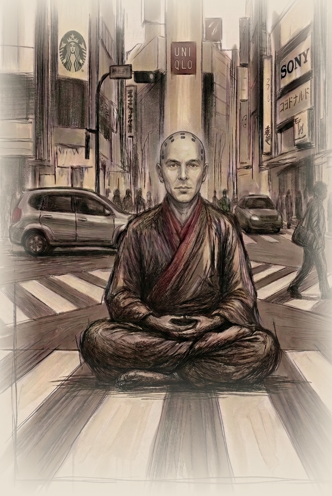

A standing note, left in the middle of the noise
Nine years a monk.
Now I do marketing.
Same subject, different building.

Atman is the Sanskrit word for the self. When I left the monastic life in 2011, I named the new work after the old study, because it was the same study: how the mind builds the story it then mistakes for the world. In the Sanskrit world, it is known that perception is not fact but rather confusion. In business, they call it a conversion funnel. I close the gap between what science actually knows about human behavior and what companies do with it, which most days is nothing.
I write the strategy and code the machine that runs it, drink good bourbon while I do it, and hold that most marketing advice is superstition in a good suit.
If you landed here, it's because this domain sits in the from-line of my email address. It was my first address in that transition, fifteen years ago. The domain name no longer serves a specific purpose.
Here are the doorways to the work I do now